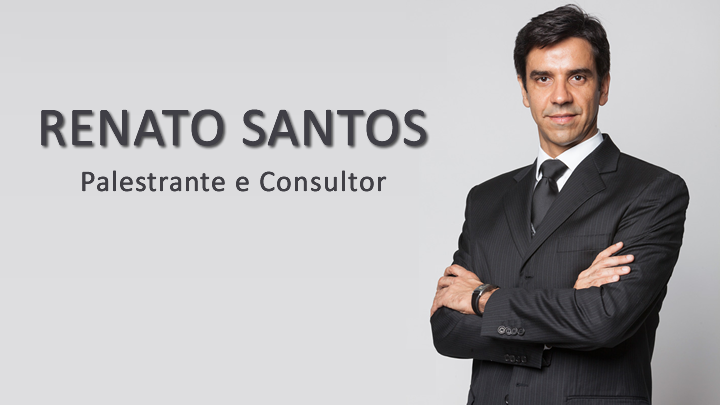

3ª da Inovação
INOVAÇÃO E EMPREENDEDORISMO

Palestrante e consultor com atuação internacional.
Trabalha há 20 anos com o SEBRAE, desenvolvendo soluções de consultoria e treinamento aplicadas em todo o Brasil.
Consultor e palestrante da Conferência das Nações Unidas para o Comércio e Desenvolvimento (UNCTAD), da International Finance Corporation (IFC) e do Banco Mudial.
Em 2013 e 2014, foi conselheiro do apresentador Roberto Justus no programa “O APRENDIZ” .